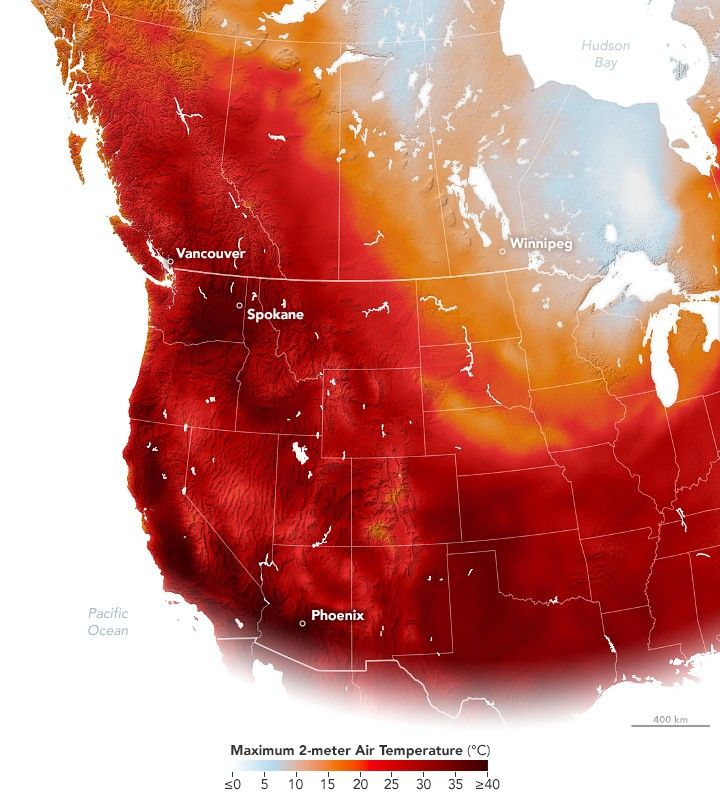

Summer Heat Lingers in the West
September 2025 began with unseasonably high temperatures across much of western North America. New heat records were set in British Columbia, Canada, and the U.S. Pacific Northwest as a persistent high-pressure system, known as an omega block, settled over the region for several days.
The map above shows modeled air temperatures on September 3, 2025, at 2 p.m. Pacific Time, measured 2 meters (6.5 feet) above the ground. Produced using the GEOS (Goddard Earth Observing System) model, it highlights areas of extreme heat. The darkest red zones indicate temperatures approaching 40°C (104°F).
On that day, a new high-temperature record for September in Canada—40.8°C (105.4°F)—was set in Ashcroft, British Columbia, about 200 kilometers (120 miles) northeast of Vancouver. Comparable heat at this time of year is more typical in the U.S. Southwest, such as Phoenix, Arizona.
Temperatures also soared east of the Cascade Range in Washington state. Spokane tied its daily record of 36.7°C (98°F) on September 3, following highs of 37.2°C (99°F) over the previous two days—marking the hottest September temperatures for that location since records began in 1881.
The early-September heat followed a drier-than-normal summer in the region, contributing to several large wildfires burning in British Columbia at a time when seasonal rains would typically start.
While the blocked high-pressure system concentrated heat in the west, more autumn-like temperatures moved into the interior of the continent. The arrival of a cold front brought sharp drops in temperature to Winnipeg, Manitoba, and northern Ontario, prompting warnings for early-season frost and even snow flurries.